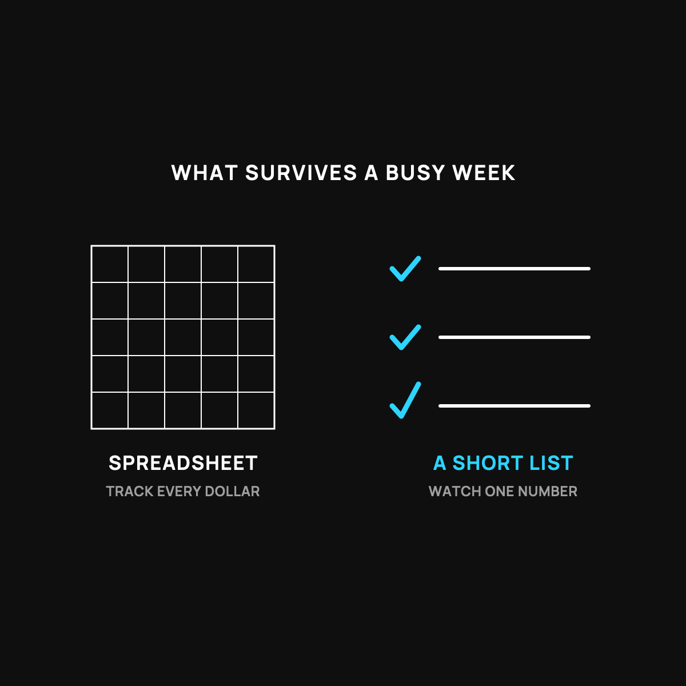

A Budget That Survives a Busy Week
A grocery list, not a spreadsheet. Three lines, one number to watch.
A budget that survives a busy week is a grocery list, not a spreadsheet. Three lines: the bills that don't change, one number you're allowed to spend on everything else, and a save-first transfer on payday. Set it once, automate what you can, and watch one number all month.

Most budgets die in the first busy week. Not because you failed. Because the budget was built for someone with a quiet life and a free Sunday afternoon, and that's not you. Here's a budget built for a real week, the kind with a sick kid, a late meeting, and no time to log receipts.
Stop building a spreadsheet. Build a grocery list.
A spreadsheet budget asks you to track every dollar in every aisle. It's a full-time job. But you don't audit every aisle at the grocery store. You bring a short list of what matters, and you get out.
A budget that survives is a grocery list, not a spreadsheet. A few lines, the stuff that actually moves the needle, and nothing else.
The three-line budget
Here's the whole thing. Three lines.
Line 1: The bills that don't change. Rent or mortgage, insurance, car payment, phone. Add them up once. This number barely moves month to month, so you only have to do it one time, not every week.
Line 2: The number you're allowed to spend. Take what comes in, subtract Line 1, subtract what you want to save. What's left is your spending money for everything else: groceries, gas, eating out, the little stuff. That one number is the only thing you have to watch.
Line 3: The save-first move. Decide the amount you save, and move it the day you get paid, before you can spend it. Not what's left at the end. What's left at the end is always zero. Pay yourself first, then live on the rest.
That's it. One fixed number, one spending number, one save-first move.
Why this one survives
It survives because it asks almost nothing of you during the week. You're not logging every coffee. You're watching one number: the spending money. When it's getting low, you slow down. When it's gone, you're done till next check. No math at the register.
It also survives because it's honest about the leaks. Most people feel broke on a good income because money slips out in small drips they never see. I laid out the five money leaks busy families miss, and the plain reason it happens.
Make it automatic
The busy-week secret is to let the calendar do the work. Automatic transfer to savings on payday. Automatic payment on the fixed bills. The less you have to decide in the moment, the more the budget survives contact with a hard week.
The takeaway
A budget that survives a busy week isn't a spreadsheet you tend like a garden. It's a short list: your fixed bills, one spending number, and a save-first move you make on payday. Set it once, automate what you can, and watch one number. That's a budget built for the life you actually have.
Questions I get about this
How do I make a budget if I have no time?
Add up your fixed bills once. Subtract them and your savings amount from what comes in. What's left is your one spending number for groceries, gas, and the little stuff. That's the only number you watch. When it's low, slow down. When it's gone, you're done till next check.
What does pay yourself first mean?
Move your savings amount the day you get paid, before you can spend it. Not what's left at the end. What's left at the end is always zero. Then live on the rest.
Why do most budgets fail?
Because they ask you to track every dollar in every aisle, which is a full-time job. The first sick kid or late meeting kills it. A budget survives when it asks almost nothing of you during the week and lets the calendar do the work with automatic transfers and payments.

Written by David Dewese
Normal guy with a full-time job, wife, and kids. Spent twenty years pursuing music and creative ventures before starting a family. Sharing tips and tricks on how to thrive while living on an artist's income. Not a financial advisor. More about me.
New here?
Normaltown USA is plain-English money and healthcare help for normal people, written by a regular guy with a family of four. No jargon, no hype. Start here, or read the FAQ.